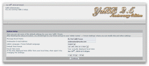

Setting up your YaBB
Now that you have everything edited, uploaded and the proper CHMOD set, it's time to begin the final step in the process. To do this, you will need to point your browser to the Setup.pl. This is located in the same directory you installed YaBB in (http://www.yoursite.com/cgi-bin/yabb2/Setup.pl. Revise the URL as needed.).
Note that file names on Linux/Unix/*nix servers are case sensitive. Be sure to capitalize that "S" in Setup.pl
Running the Setup Utility
- Once you have loaded Setup.pl in your browser, you will be asked to provide the password for the setup. This is a security measure to prevent web strangers from editing your YaBB settings. Since this is a brand new install, the default admin password needs to be given. So in the box, type in "admin" (without quotes).
- As soon as you're logged in, you will be given a list of the important paths YaBB will need to know before it can work. These paths will point to important YaBB files, your templates, avatars, attachments, etc. A number of these paths can be automatically picked up by the Setup Utility, but the content of your /yabbfiles/ folder will need special attention, where absolute DIR Paths will be needed in some places and URL's in others and Must be correct, or your forum will not display the templates nor graphics.
- With your paths in place, the setup checks if all needed Modules are available on your server. If not you can not proceed. Explications you will see on the page. If the requirements are mainly OK you can continue with the Button at the bottom of the page. If some not essentially needed Modules are missing, you can see the output of the Module check later on the main page of your Admin Center.
- The next screen will give you the ability to set a few basic settings such as YaBB's time zone and the name of your forum. Please note that this page should look like the screenshot above. If not, one of the paths to your yabbfiles is incorrect.
- Finally, the Setup Utility will run a quick system test to make sure important files are where they need to be. When the check is over, your new YaBB community will be ready for use!
- Remember, your default username is "admin" and password is "admin".
- Once logged in, go to your Profile (Click on User Center, User CP) and change the default password and setup your profile. Click the Admin or Admin Center button to visit your Administration Center. Click on Security Settings, then the Vaildation Tab, Verify "Set a masterkey for encryption", Validation Image Foreground color, Validation Image Shade color and Validation Image Background color have been set or enter these now. Visit each of the various settings pages to verify all of the new features are set to your desire. Save each of these pages, even if you don't change any settings on them. This includes Forum Settings, Advanced Settings, The Guardian, Antispam Settings and All the Tabs within each.
Security Tip: If you are NOT converting from a version of YaBB 1.x, use your FTP client to delete 'cgi-bin/yabb2/Setup.pl'. This will prevent anyone from tampering with your forum using the Setup Utility.